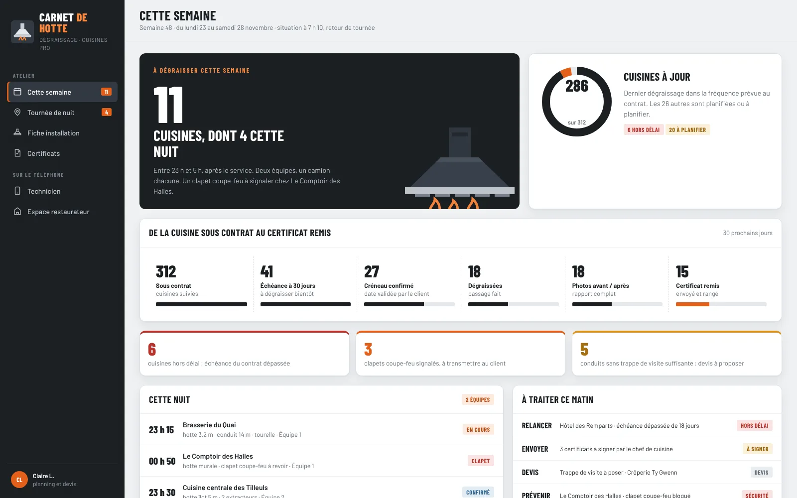
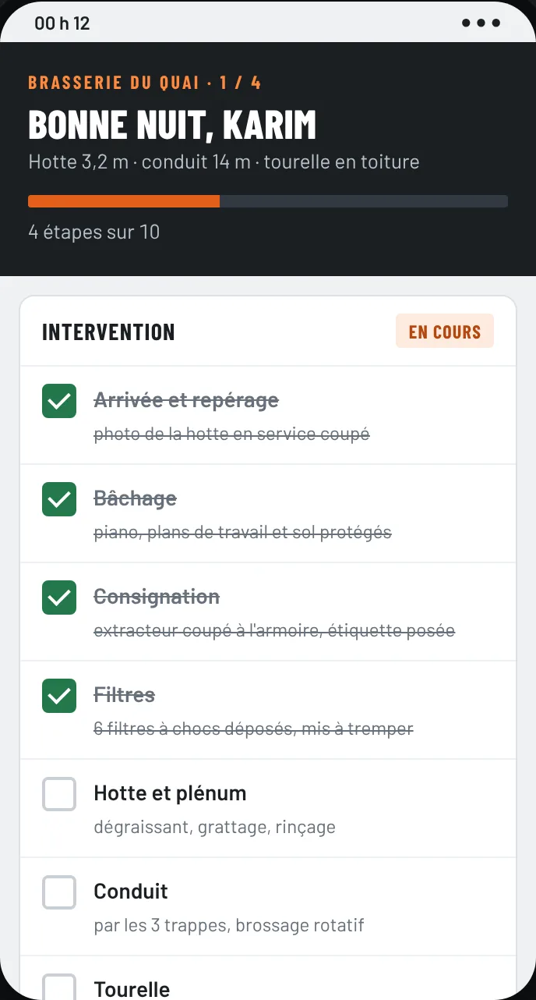
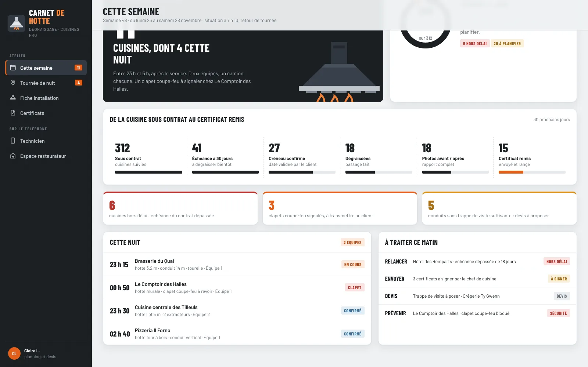
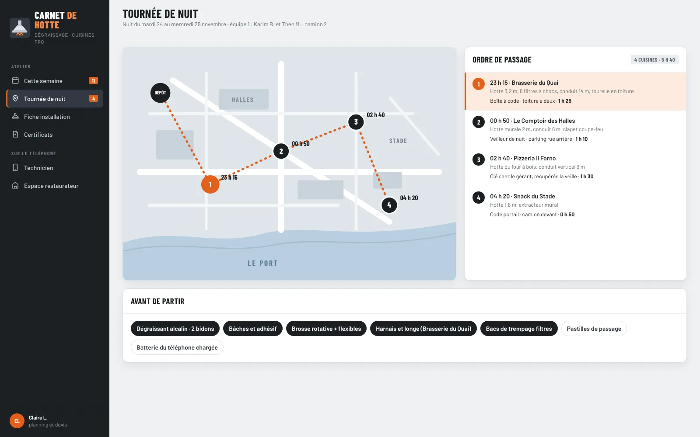
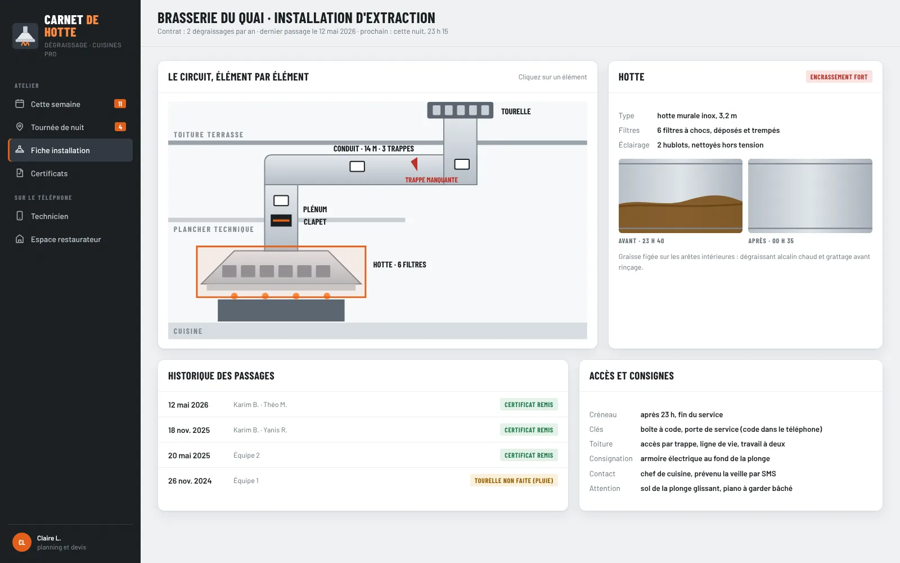
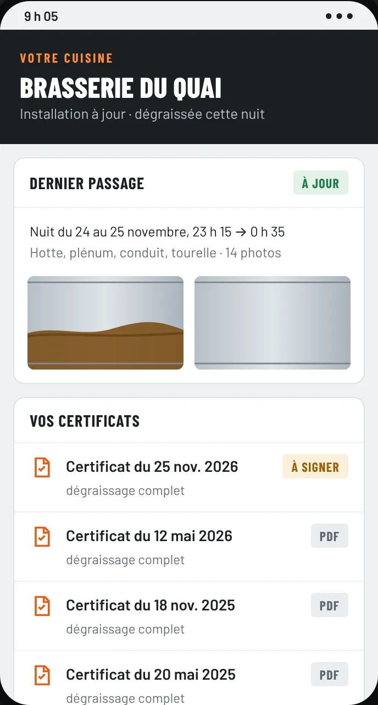
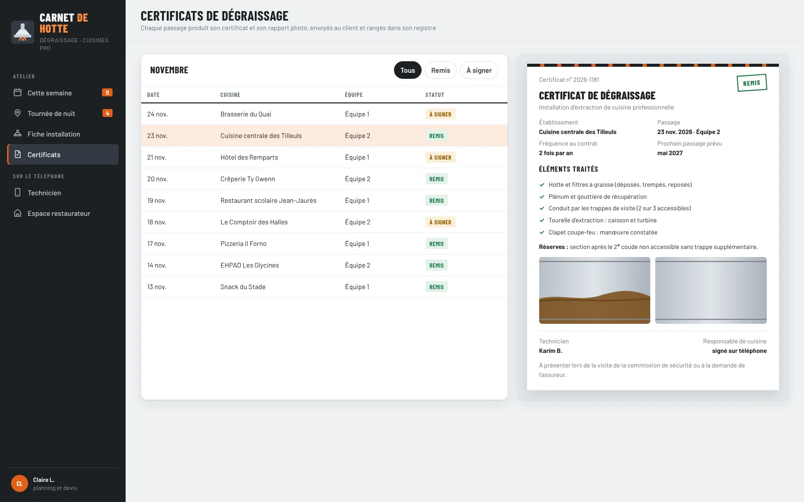

Concept · dégraissage des cuisines professionnelles
Chaque hotte suivie, de la tournée de nuit au certificat.
Le Carnet de hotte : un outil sur mesure pour les entreprises qui dégraissent hottes, conduits et tourelles. Les échéances de chaque contrat, la tournée de la nuit, le circuit d'extraction élément par élément, les photos avant / après et un certificat que le restaurateur retrouve quand il veut.
Concept réalisé à partir du fonctionnement habituel du métier. Toutes les données affichées sont fictives.


Des interventions de nuit, après le service, chez des dizaines ou des centaines de clients, chacun avec sa fréquence prévue au contrat.
Ne laisser passer aucune échéance, préparer la tournée, prouver le travail fait (photos, certificat) pour la commission de sécurité et l'assureur du client.
Un carnet par installation, rempli sur le téléphone pendant l'intervention, qui produit le certificat et relance au bon moment.
cuisines à dégraisser cette semaine, dont 4 cette nuit
Le Carnet de hotte ouvre sur ce qui compte : ce qu'il faut faire cette nuit, les cuisines hors délai, les clapets coupe-feu et les trappes de visite à signaler au client.
Aucun contrat ne sort de sa fréquence
Chaque cuisine sous contrat a sa fréquence de dégraissage. Le carnet calcule les échéances et montre le chemin, de la cuisine sous contrat au certificat remis.
- Les cuisines hors délai en tête de liste, avec le client à relancer
- Le créneau proposé au restaurateur, validé par lui en un geste
- Les anomalies de la semaine : clapets coupe-feu, trappes de visite manquantes

La nuit préparée avant de monter dans le camion
L'ordre de passage, la durée prévue pour chaque cuisine, les accès (boîte à code, veilleur, clé récupérée la veille) et le matériel à charger.
- Une carte de la tournée, cuisine par cuisine
- Les consignes d'accès et de sécurité : toiture, consignation, sol glissant
- La liste de chargement : dégraissant, bâches, brosse rotative, harnais

Le circuit d'extraction, élément par élément
Hotte, filtres à graisse, plénum, conduit, trappes de visite, clapet coupe-feu, tourelle : chaque élément garde son état, ses photos et ses remarques, passage après passage.
- Le schéma du circuit, cliquable, avec l'encrassement constaté
- Les photos avant / après rangées par élément
- L'historique des passages et ce qui n'a pas pu être fait (pluie, accès)

Le technicien coche, le certificat s'écrit
La check-list suit l'intervention réelle : bâchage, consignation, dépose des filtres, hotte et plénum, conduit par les trappes, tourelle, remise en route. Le restaurateur retrouve tout de son côté.
- Une étape cochée = une ligne du certificat
- Les photos prises dans l'application, rangées toutes seules
- La signature du chef de cuisine sur le téléphone
Le technicien, en pleine nuit

Le restaurateur, le lendemain matin
Un certificat prêt pour la commission de sécurité
Chaque passage produit son certificat de dégraissage, avec les éléments traités, les réserves et les photos. Il part au client et se range dans son registre.
- Les certificats à faire signer, ceux déjà remis
- Les réserves écrites noir sur blanc (section non accessible, trappe à poser)
- Un registre que le client présente à la commission de sécurité ou à son assureur

Comment ça se branche
Vos outils restent en place. Le carnet les relie.
Rien n'est à ressaisir : le carnet se branche sur ce qui existe déjà (tableur des contrats, agenda, logiciel de facturation) et supprime les doubles saisies. Le détail se vérifie ensemble, outil par outil.
On commence par ce qui vous fait gagner le plus de temps
Le carnet
Toutes vos cuisines, leur circuit et leur fréquence, repris de vos fichiers actuels.
Le certificat
La check-list sur téléphone, les photos et le certificat produit sans ressaisie.
Les tournées
Échéances, créneaux proposés au client, ordre de passage et accès.
L'espace client
Certificats, photos et prochain passage, pour moins d'appels et de mails.
Un outil construit autour de votre façon de travailler
Ce concept est un point de départ : chaque écran s'adapte à votre organisation, à vos contrats et à vos outils, et se teste en conditions réelles avant d'aller plus loin.